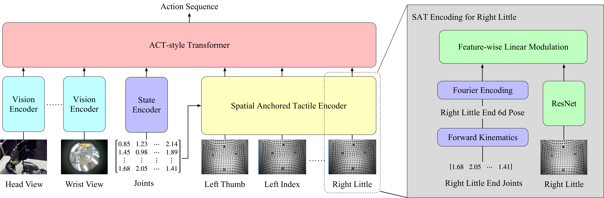
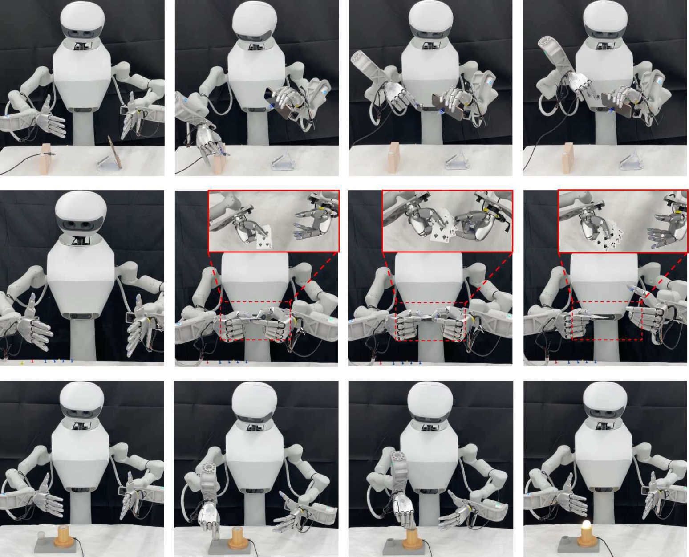
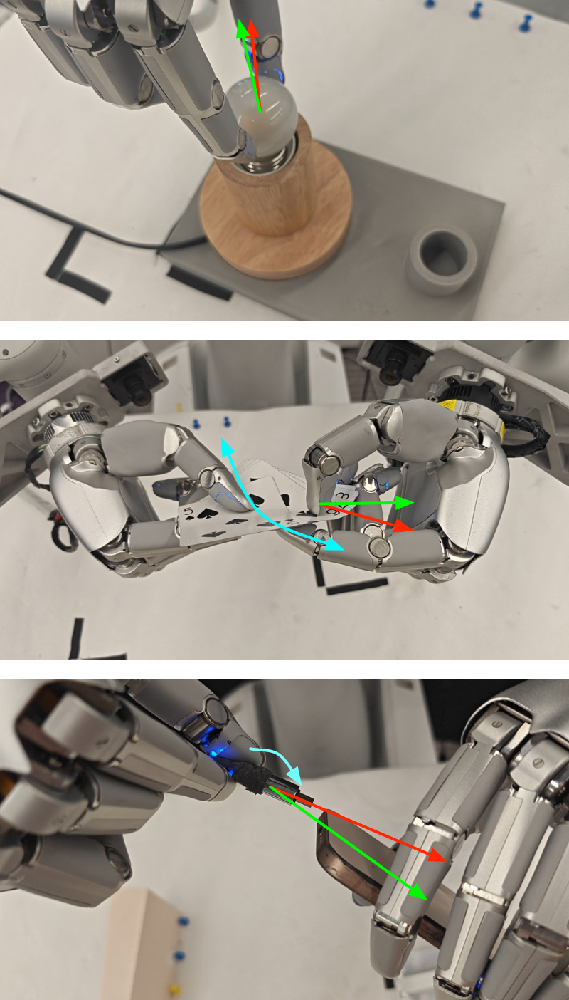
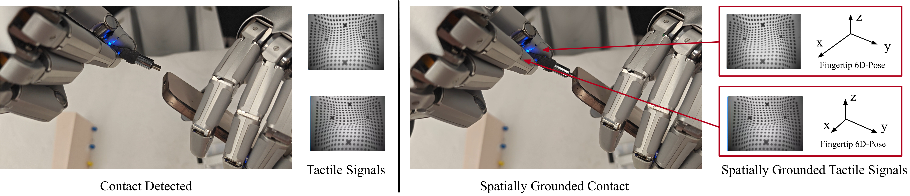

Spatially anchored Tactile Awareness for Robust Dexterous Manipulation
以论文正文、实验、附录与原始图注为证据的参考级中文精读
一句话贡献：提出 SaTA：将每个指尖触觉特征通过正运动学锚定到手部坐标系，使策略在保留触觉细节的同时获得可用于亚毫米装配的空间几何推理能力。
关键词：spatially anchored tactile awareness; forward kinematics; Fourier encoding; USB-C mating; bulb installation; card sliding
1. 论文速览与证据链
1.0 一句话贡献与关键词
提出 SaTA：将每个指尖触觉特征通过正运动学锚定到手部坐标系，使策略在保留触觉细节的同时获得可用于亚毫米装配的空间几何推理能力。这一定义把 SaTA 的任务对象、核心机制和预期收益放在同一句话中。关键词包括：spatially anchored tactile awareness; forward kinematics; Fourier encoding; USB-C mating; bulb installation; card sliding。这些概念共同界定了该工作位于灵巧操作、动作表示、感知融合或跨具身学习中的具体技术位置。
1.1 技术定位与核心贡献
SaTA 解决的是触觉“看到了接触但不知道接触在哪里”的问题。它把 raw tactile image 通过 tactile encoder 保留细节，再用 forward kinematics 和 Fourier encoding 把触觉特征锚定到手的 URDF/wrist 坐标系中，使策略能基于多指接触的相对空间关系输出动作。这篇论文不是做触觉重建，也不是显式物体位姿估计，而是把空间锚定触觉作为 end-to-end policy 的中间表示。它在 learning-based dexterous manipulation 中补上了传统 model-based 方法擅长的几何精度。
1.2 端到端信息流
论文用 USB-C mating、light bulb installation 和 card sliding 三类高精度任务验证。摘要报告相对强 visuo-tactile baselines 最高提升 30% 成功率，并降低 27% 完成时间。任务都要求接触时精确对齐，正好检验 spatial anchoring 是否有必要。
2. 研究问题与动机
2.1 论文面对的真实瓶颈
当前 visuo-tactile policy 常能检测接触发生，却难以把触觉模式和手部运动学联系起来。对于 USB-C 插接、灯泡螺纹啮合或卡牌滑动，成功依赖的是亚毫米级相对几何，而不是简单知道指尖有压力。接触关键时刻，手指会遮挡外部相机，金属或塑料表面反光也会降低视觉定位精度。触觉能够看到局部接触几何，但如果不锚定到手的坐标系，多个指尖的触觉图像仍只是彼此孤立的局部测量。显式 pose estimation 或 tactile SLAM 需要已知物体模型或复杂优化，不适合 end-to-end 学习部署。SaTA 保留学习框架，但把几何先验注入 representation：让 policy 自己从空间化触觉中推理相对位姿。论文假设任务成功主要由手内相对几何决定，而不是全局世界坐标。因此它选择 wrist/URDF 坐标作为稳定参考系，让同一技能能在不同手臂位姿下迁移。
4. 方法、表示与训练流程
4.1 总体方法链路
SaTA 接收 head/wrist RGB、多个指尖 tactile images 和 joint states。视觉 encoder、state encoder 和 tactile encoder 分别提特征，spatial anchored tactile encoder 负责把触觉特征映射到手的运动学框架中，最后由 ACT-style Transformer 输出动作序列。论文选择手腕/URDF 坐标而不是世界或相机坐标。原因是精密操作依赖手内部件和被操作物之间的相对关系；若换手臂姿态，全局位置变化很大，但手内相对几何仍是策略要控制的核心。亚毫米对齐要求表示对位置和方向小变化敏感。
4.2 核心输入、输出与表示
SaTA 对完整 6D pose 使用 Fourier encoding，让 policy 能感知细微空间变化，而不是只看到粗粒度离散标签。与把触觉投成稀疏 3D 点云不同，SaTA 尽量保留 raw tactile feature 的纹理和接触形状，同时附加空间位置。这个折中点是论文主张：既要感知 richness，也要 geometric grounding。
SaTA：空间锚定的触觉感知链路

5. 实验设计、结果与消融
5.1 任务、数据与评估协议
USB-C mating 要求两个手在自由空间中协调并完成亚毫米级插接；bulb installation 需要螺纹对齐和旋转控制；card sliding 要求微妙力调节和角度控制。这三类任务都故意设置成视觉困难、触觉关键。摘要给出的关键结果是 SaTA 相对强 visuo-tactile baseline 最高提升 30% 成功率，并降低 27% 完成时间。这说明 spatial anchoring 不只提升最终是否成功，也让策略更快完成精密对齐。论文的 failure figure 对比 Tactile-Flat baseline，红箭头显示错误方向或姿态，绿箭头显示正确方向。
5.2 主结果如何支持论文主张
这说明未锚定触觉虽然知道接触，但不知道应该向哪个空间方向修正。最关键消融是去掉 spatial anchoring 或替换触觉表示。若 raw tactile-only 表现下降，说明触觉细节不足以自动推断几何；若只保留空间而损失 tactile richness，也可能无法识别局部接触状态。
空间锚定触觉对策略行为的影响

6. 复现路线与工程风险
6.1 最小可行复现路径
可以从单手高精度插接或滑动任务开始，先同步 tactile images、joint states 和相机视角，再实现 forward kinematics 到 wrist frame 的特征锚定。需要多指触觉传感器、准确 URDF、关节状态读取和相机观测。URDF 或指尖坐标标定错误会直接破坏 spatial anchoring，导致策略学到错误几何关系。除成功率外，应检查 completion time、关键接触时刻动作方向、以及在不同手臂姿态下的迁移。若只在固定姿态有效，说明 wrist-frame anchoring 的泛化没有真正成立。
7. 分析、局限与边界
7.1 最有价值的贡献
SaTA 给触觉表示提供了一个非常清晰的原则：触觉特征必须和身体坐标绑定，才能支撑几何推理。这个原则可迁移到其他多指手、夹爪和触觉 VLA。论文任务集中在精密接触和相对几何，尚不能证明该表示对所有灵巧操作都必要。对于主要由视觉语义或粗抓取决定的任务，spatial anchoring 的收益可能变小。方法依赖准确运动学和触觉标定，且没有显式建模力学或滑移动力学。复杂可变形物体或强动态操作可能需要额外力/触觉时序建模。可以把 SaTA 的 spatial tactile token 接入 VLA action expert，或者与 ViTacFormer 的未来触觉预测结合，形成既有空间锚定又有接触 dynamics 的低层表示。
SaTA 的失败类型与边界

从无位置触觉到空间感知操作

证据深挖：机制、实验与复现判断
空间锚定改变了什么信息
原始触觉向量可以告诉策略某个 taxel 受压，却不能天然说明它对应场景中的哪个对象部位，也难以跨手姿态比较。SaTA 通过坐标变换把接触绑定到手部与场景，使策略能够把‘食指外侧接触目标左边缘’之类的关系用于动作。这个转换提升了语义密度，但同时把坐标标定、手部姿态估计和触觉传感误差引入同一表示。
最高约 30% 提升应如何理解
成功率提升表明空间化触觉在论文任务中提供了实质帮助，但它不是触觉在任意操作上都会提升 30% 的通用常数。收益大小取决于任务是否存在视觉遮挡、接触位置是否决定下一动作、基线触觉表示是否足够强，以及标定误差是否受控。更严谨的使用方式是按任务阶段测量增益，并报告接触锚点错误时性能如何退化。
与 tactile point cloud 的区别
tactile point cloud 通常把接触样本表示为三维点集合，重点是几何重建；SaTA 更强调把触觉信号锚定到策略可解释的空间和身体部位，使其可与视觉及 proprioception 对齐。两者并不冲突：point cloud 可以作为空间载体，SaTA 式锚定可提供坐标与语义约束。关键问题是表示能否在手运动时稳定更新，而不是名称差异。
最小复现与诊断顺序
首先在静止物体与已知手姿态下验证 taxel 到空间坐标的映射，再让手缓慢移动，检查同一接触点是否保持稳定；之后才接入策略比较原始触觉、仅手坐标锚定和完整场景锚定。若直接训练控制策略，即使成功率下降也无法判断是传感器噪声、坐标变换、视觉配准还是融合网络造成的。
8. 组会问答与阅读结论
SaTA 的关键取舍
SaTA 回答的是触觉信号如何获得空间语义：同样的压力值只有绑定到手指、物体部位和场景位置后，才适合被策略利用。它并不直接建模摩擦和力学，因此适合作为触觉表示层，与力控、世界模型或 VLA 组合，而不是被视作完整灵巧操作方案。
Q1：SaTA 为什么锚定到手坐标而不是世界坐标？
因为灵巧操作关键是手内相对几何；世界坐标随手臂姿态变化大，手腕/URDF 坐标更稳定。
Q2：它和 tactile point cloud 有什么区别？
point cloud 空间化强但可能丢细节；SaTA 保留 tactile feature richness，同时附加空间编码。
Q3：最高 30% 成功率提升说明什么？
说明空间锚定对精密装配类任务有明显因果作用，但还需要看不同任务和消融。
Q4：复现最容易错哪里？
URDF、指尖外参和时间同步。空间锚定一旦坐标错，表示会系统性误导策略。
Q5：与 ViTacFormer 可否结合？
可以。SaTA 负责触觉空间位置，ViTacFormer 负责跨模态和未来触觉预测，两者互补。
阅读结论与研究启发
SaTA 适合放在灵巧手触觉/泛化专题的前排阅读。建议围绕“表示如何服务真实接触控制”设计复现：先复现中间表示，再接策略，再评估真实任务边界。